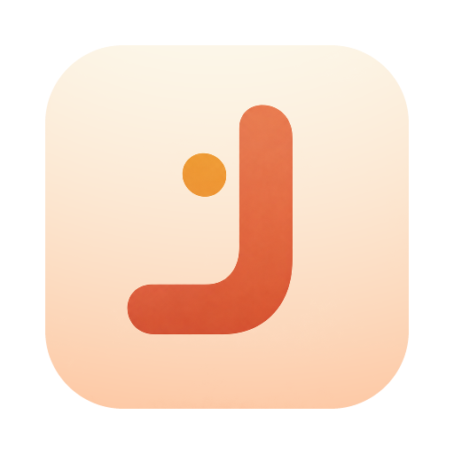

本机分析
ON-DEVICE姿态推理和坐姿判断都在本机完成。摄像头画面不会上传，日志也留在你的电脑里。

渐好 JIANHAO 下载桌面版桌面坐姿提醒工具 / 01
渐好在本机留意坐姿，需要调整时用窗口边缘的柔和呼吸灯提醒你。提醒可能短暂打断思路；你可以调节检测灵敏度、关闭提示音，或暂停监测。
打开摄像头开始
01 为什么是渐好
长时间伏案时，渐好在本机观察坐姿，并在需要调整时提醒你。提示有时会打断思路，所以提醒方式和节奏都交给你选择。
姿态推理和坐姿判断都在本机完成。摄像头画面不会上传，日志也留在你的电脑里。
坐到平时舒服的位置，完成一次校准。渐好以你的个人基线为参考，也支持重新校准。
边框以柔和的红黄渐变呼吸。检测灵敏度可调，提示音也可以按喜好开启或关闭。
02 从此刻开始
选择低、标准或高检测灵敏度，并决定是否播放提示音。手头的事不方便中断时，也可以暂停监测。
允许应用使用电脑摄像头。
用日常舒适的坐姿建立个人基线。
窗口边框在需要时轻轻提示你。
04 把渐好带到桌面上
免费下载渐好，给长时间伏案的自己一个轻轻的提醒。